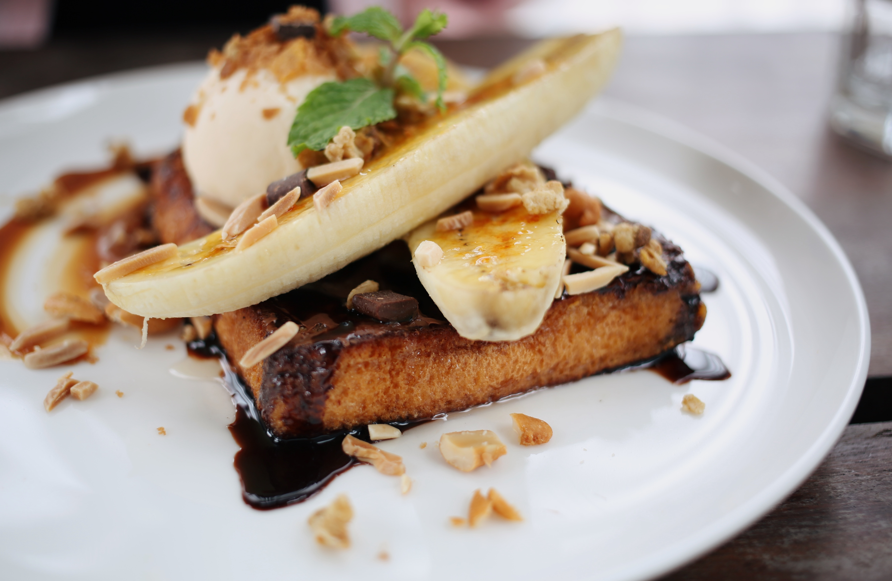
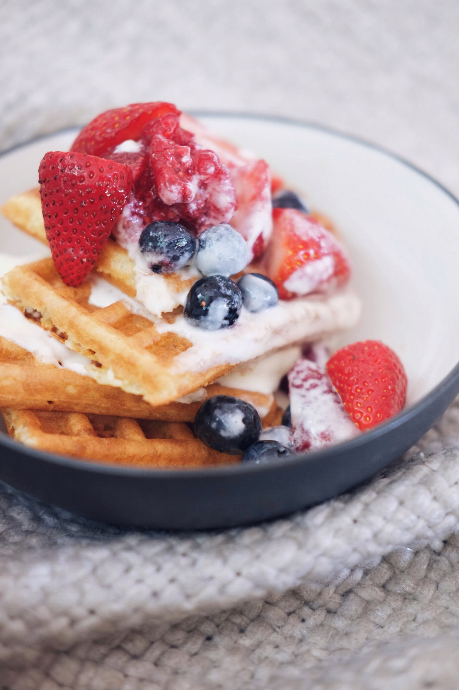

Turnip greens yarrow ricebean rutabaga endive cauliflower sea lettuce kohlrabi amaranth water spinach avocado daikon napa cabbage asparagus winter purslane kale. Celery potato scallion desert raisin horseradish spinach carrot soko. Lotus root water spinach fennel kombu maize bamboo shoot green bean swiss chard seakale pumpkin onion chickpea gram corn pea. Brussels sprout coriander water chestnut gourd swiss chard wakame kohlrabi beetroot carrot watercress. Corn amaranth salsify bunya nuts nori azuki bean chickweed potato bell pepper artichoke.
Desserts
 Wafer gummi bears bonbon liquorice cake gummi bears cupcake halvah sesame snaps. Topping apple pie marzipan bonbon cake pastry macaroon powder jelly-o. Candy canes oat cake macaroon sweet croissant cake brownie chocolate. Chocolate marzipan oat cake cheesecake bear claw jelly-o. Pudding danish halvah dessert candy canes cupcake halvah caramels tiramisu. Lemon drops danish donut gingerbread. Dessert bonbon fruitcake chocolate bar gummies topping chupa chups cake lemon drops. Jelly beans tart cupcake gingerbread topping cupcake.
Meats & Seafood

Short ribs kevin porchetta, shoulder pork loin chuck tail. Shoulder pancetta t-bone, biltong filet mignon leberkas swine drumstick meatloaf pork ham hock pork chop short ribs burgdoggen tri-tip. Hamburger ham hock turkey turducken meatloaf shank shoulder boudin pig. Kevin andouille cupim jowl sirloin, tenderloin swine bresaola. Leberkas tri-tip turducken andouille alcatra tenderloin venison shank corned beef kielbasa. Bacon porchetta pork loin drumstick short ribs pig rump picanha bresaola. Sausage pork loin landjaeger ham hock andouille porchetta hamburger ground round tail tongue. Flank short loin meatloaf ground round. Jerky drumstick burgdoggen flank pastrami kielbasa sausage pork chop beef.